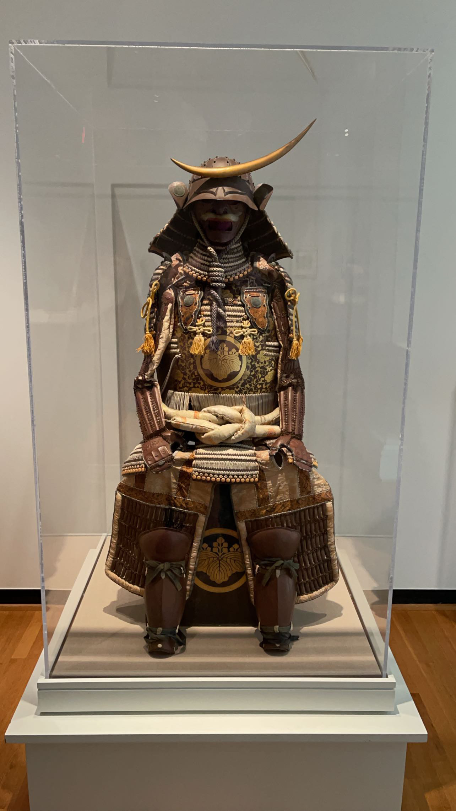
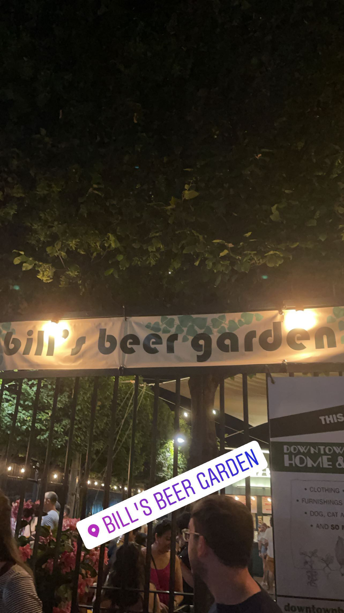
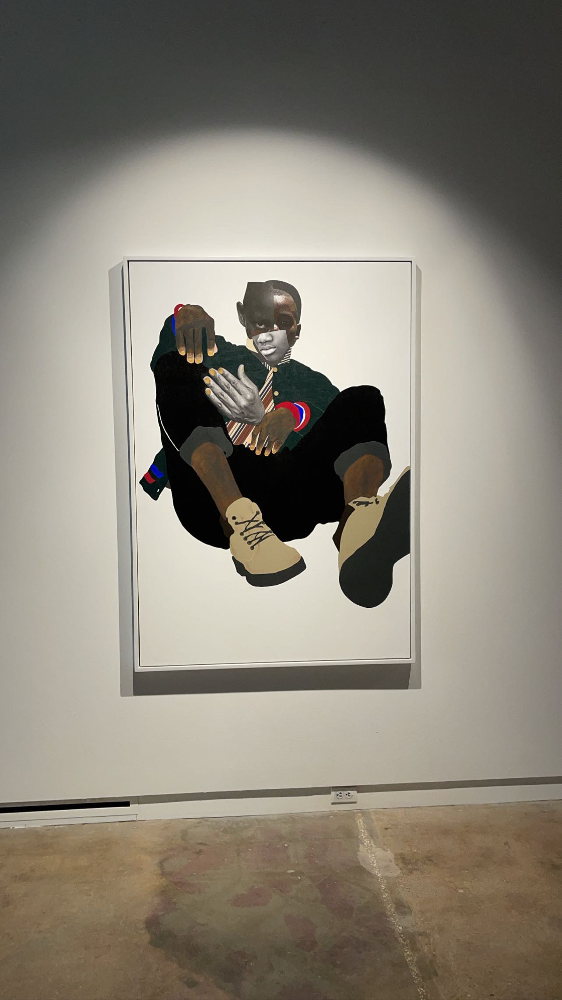
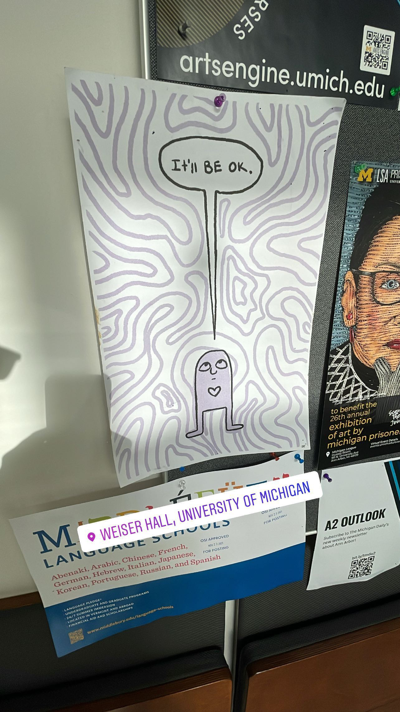
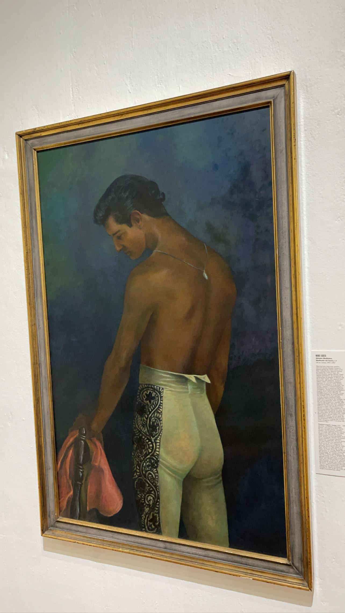
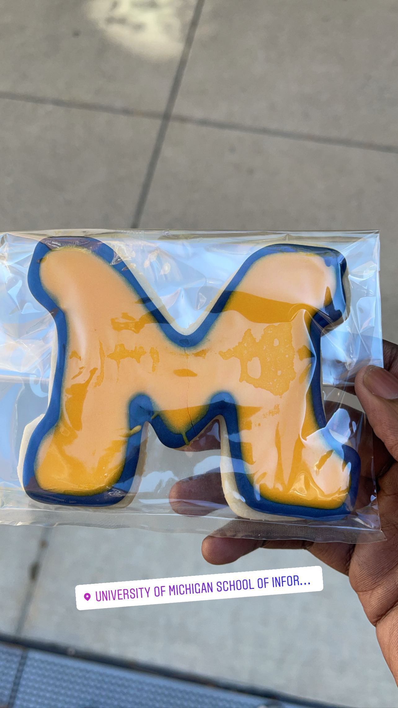
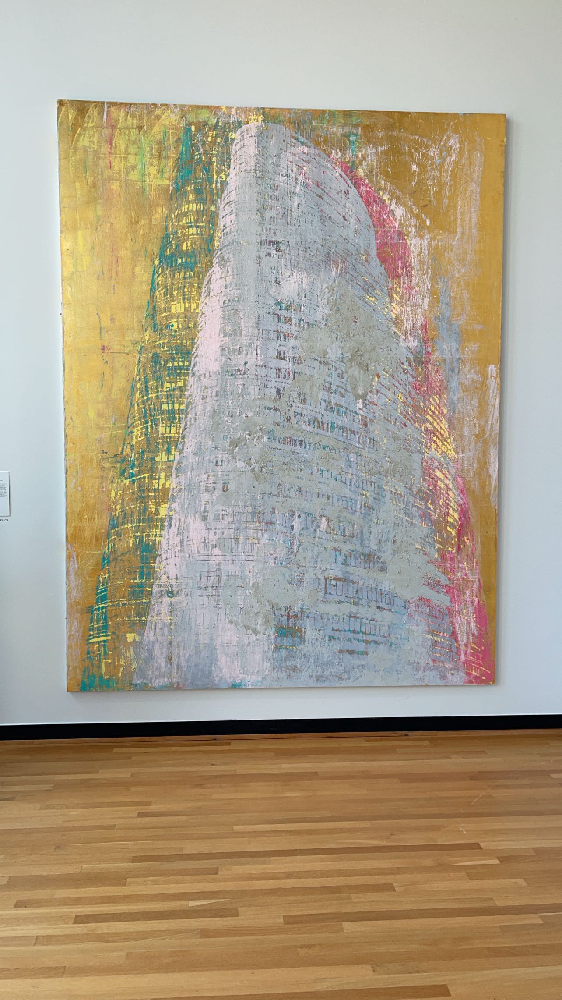
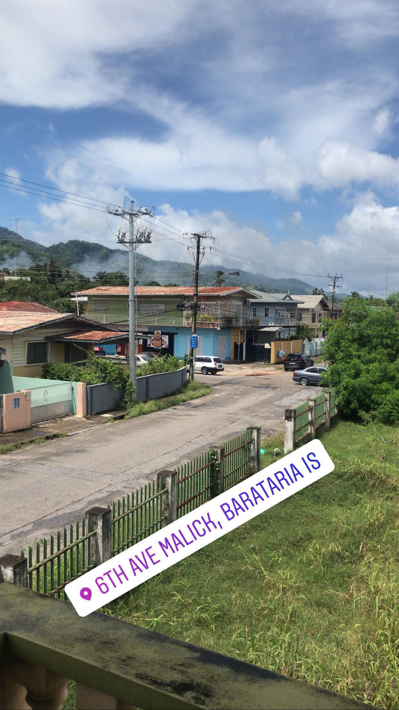

Cool Pictures
Honestly, I have no idea what to put here for this section of the personal blog. So while I'm figuring out that piece of my ever crumbling life, I'll use here to show cool pictures I found as well as my adventures everywhere.








I look forward to updating more. Honestly this is pretty fun just alot to do!